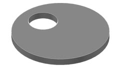

Плита перекрытия
Без люка

ПП 10-0 инд. ПП-10-2
ПП-15-0 инд. 1ПП 15-
2
1ПП-20-0 инд. ПП-20-2
С люком
ПП 10-2 Л ПП 15-2 Л
ПП 20-2 Л ПП 10-2 Т
ПП 15-2 Т ПП 20-2 Т
С дождеприемником
П(Д)
П(д) лив. (комплект)
< назад <

 ПП 10-2 Л
ПП 15-2 Л
ПП 10-2 Л
ПП 15-2 Л